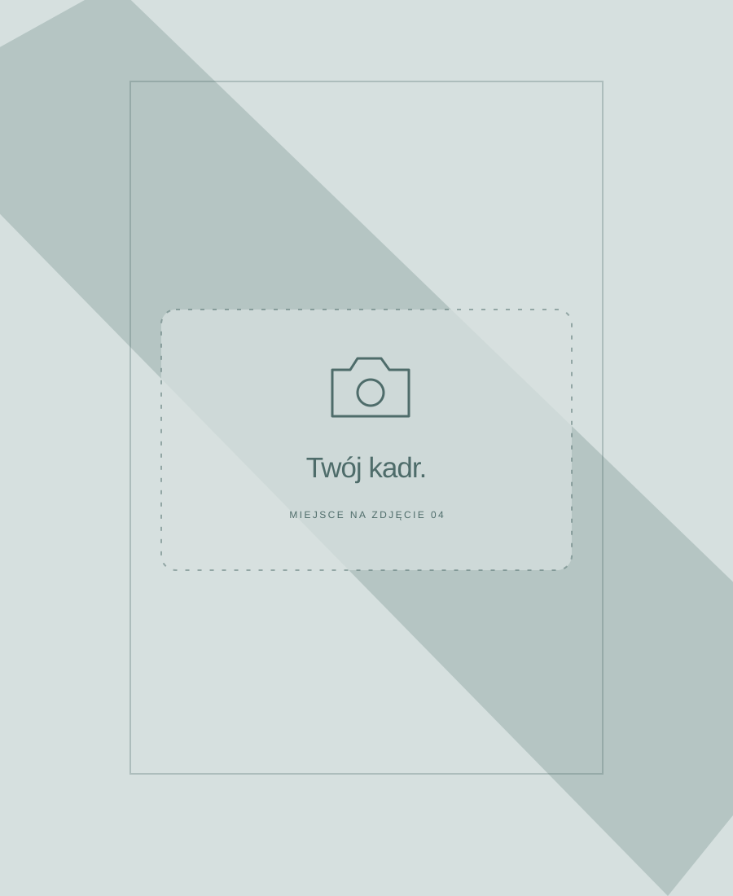
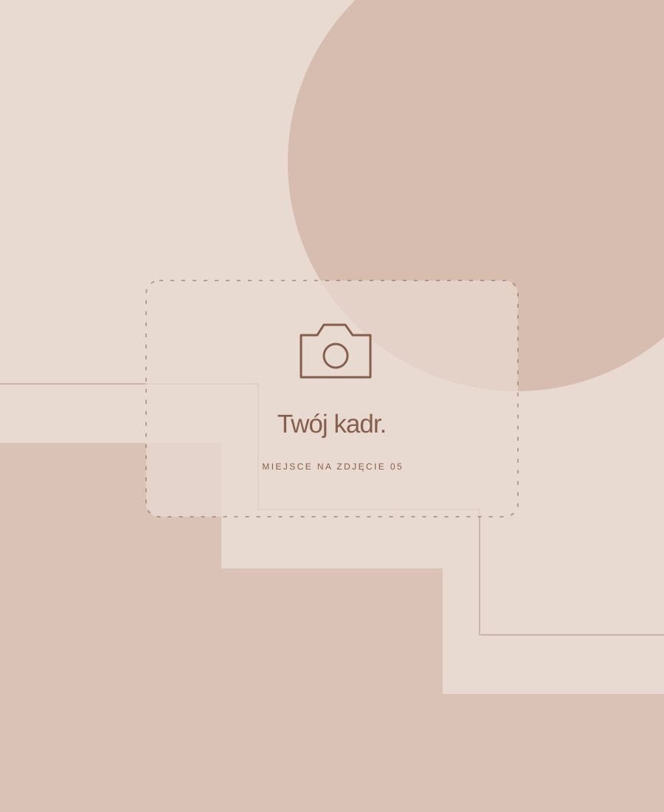
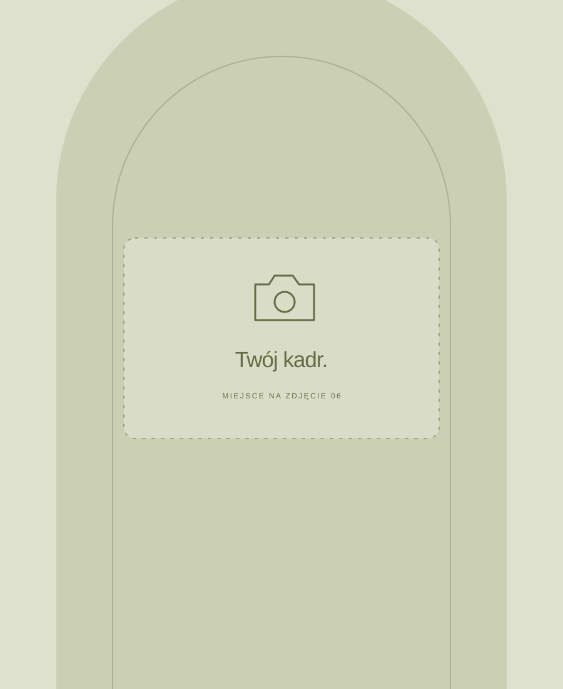

04 GALERIA
Zatrzymane
na chwilę.
Miejsca, ludzie i momenty. Mały zbiór kadrów, do których warto wracać.
 01
01[Moment, który pamiętasz]
[Miejsce / rok]
 02
02[Coś, co lubisz robić]
[Krótka historia zdjęcia]
 03
03[Ludzie i spotkania]
[Miejsce / rok]

04[Za kulisami projektu]
[Nazwa projektu]

05[Małe odkrycie]
[Miejsce / rok]

06[Kadr na później]
[Krótka historia zdjęcia]